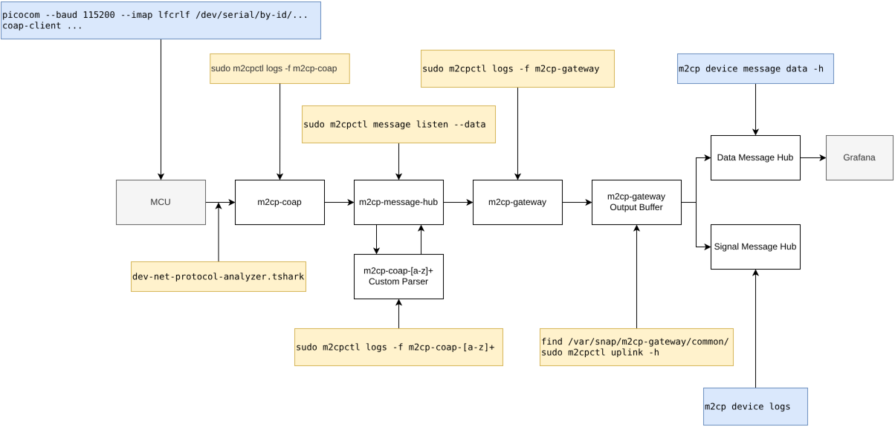

5. Messages
5.1. Monitoring Messages
Monitoring message traffic in L-IoT and Azure IoT Hub can be accomplished efficiently using two primary methods: the m2cp device message listen CLI command and the Azure IoT Hub Explorer. m2cp device message listen is part of the M2CP developer tools, enabling developers to listen to websocket message traffic of a device in real time. Azure IoT Hub Explorer is an external tool designed for monitoring IoT devices connected to Azure IoT Hub, providing live telemetry data.
5.1.1. Using the m2cp device message listen CLI Command
The m2cp device message listen command facilitates a live view of message
traffic for a specific device.
Command Line Usage and Features
To monitor messages, specify the device by its serial number or name:
$ m2cp device message listen <deviceSerial or deviceName>
Use the --jsonl flag to print output as JSON Lines for further processing.
Establishing Cloud Connectivity
To connect to an Event Hub, users must obtain a connection string through the Azure Portal by navigating to the IoT Hub
Resource and the “Build-in endpoints” blade. This connection string can also be set as an environment variable,
M2CP_LISTEN_EVENTHUB_CONNECTION_STRING, for ease of use.
5.1.2. Monitoring with Azure IoT Hub Explorer
Azure IoT Hub Explorer facilitates monitoring of IoT devices registered with Azure IoT Hub. It requires a connection
string, obtainable from the Azure portal under the IoT Hub resource’s “Shared Access Policies” section. This connection
offers a different method of connection than the one used with m2cp device message listen.
Connection and Device Selection
After downloading and launching Azure IoT Hub Explorer:
Use the “Add connection” button to enter and save the connection string.
Select the target device from the “Device List” using its serial number.
Observing Device Telemetry
To view live telemetry:
Navigate to the “Telemetry” tab.
Begin monitoring by clicking “Start.”
5.1.3. Conclusion
Both m2cp device message listen and Azure IoT Hub Explorer provide robust options
for monitoring message traffic within L-IoT and Azure IoT. Whether listening to device message traffic or monitoring IoT device telemetry
with Azure IoT Hub Explorer, developers have powerful tools at their
disposal to ensure seamless message transmission and application
functionality.
5.2. DATA Flow Debugging
The figure below provides guidance for troubleshooting issues where the flow of a message–from being sent by a device to its arrival in the cloud–may be disrupted or malfunctioning. It includes commands for inspecting various points in the flow and analyzing different aspects of message transmission.
{kind=link}

5.2.1. MCUs
Use the programmer of your choice to interact with the RIOT console. Most applications also offer some CoAP interface to interact with.
5.2.2. Ingoing Packets Analysis
Ingoing packets can be monitored using tshark.
$ sudo dev-net-protocol-analyzer.tshark -i eth0
...
Capturing on 'eth0'
...
111 4.832690792 fe80::df7:2023:1:1 → fdea:dbee:f::1 CoAP 107 NON, MID:39464, POST, /din/1/SygAAA
5.2.3. m2cp-coap
CoAP packages are received at m2cp-coap and you should be able to
trace it in its log:
$ sudo m2cpctl logs -f m2cp-coap | grep /din/1
...
2025-04-29T09:34:39Z[info](server@[::]:5683) /din/1/SygAAA: 24 bytes, 1 messages of oid 50, err: <nil>
2025-04-29T09:34:41Z[debug](server@[::]:5683) [fe80::df7:2023:1:1%eth1]:61883 -> Code: POST, Token: , Path: /din/1/SygAAA, Type: NonConfirmable, MessageID: 8922, PayloadLen: 24
2025-04-29T09:34:41Z[debug](server@[::]:5683) handler: /din/1/{sensorId:[a-zA-Z0-9_\-+=]+}, body: 32 16 08 f6 c4 9f f6 f5 2d 12 0b 64 66 74 5f 63
...
2025-04-29T09:42:48Z[info](server@[::]:5683) /din/1/pSQAAA: 25 bytes, 1 messages of oid 48, err: <nil>
2025-04-29T09:42:48Z[debug](server@[::]:5683) [fe80::df7:2023:1:1%eth1]:62411 -> Code: POST, Token: , Path: /din/1/SygAAA, Type: NonConfirmable, MessageID: 40794, PayloadLen: 24
2025-04-29T09:42:48Z[debug](server@[::]:5683) handler: /din/1/{sensorId:[a-zA-Z0-9_\-+=]+}, body: 32 16 08 c3 a5 bd f6 f5 2d 12 0b 64 66 74 5f 63
From m2cp-coap 6.1.0 onwards, the log level can be modified using the RPC “setLogLevel”. This allows you to increase the log level to “debug” to see more detailed logs.
To send a test packet to m2cp-coap directly (without physical hardware), use dev-m2cpctl coap data. The following examples use OID 1 (unknown to m2cp-coap, so the raw protobuf is forwarded) and OID 42 (known to m2cp-coap, so it is parsed inline and forwarded as a parsed message).
/din/1 — OID not known by m2cp-coap
$ dev-m2cpctl.m2cpctl coap data 1 --hw-serial 123
Sending data to [fdea:dbee:f::1]:5683
Endpoint: /din/1/ew
Payload: ARwIhJGfywYQzsLxBRoKZGVtby1tb2RlbCUAUH1E
Result Code: Valid (67)
Result Body:
$ dev-m2cpctl.m2cpctl message listen --data
...
[16:47:00.000]--[DATA ]--[sensor.ew.oid.1.protobuf.m2cp-coap.b9961153-efa6-520b-b21f-905d34d775e3]->[sensor.ew.oid.1.protobuf.m2cp-coap.b9961153-efa6-520b-b21f-905d34d775e3]-[5882b7eb-e1b2-4ef0-bedd-5ad919f4e355]
[16:47:00.000]--[DATA ]--[sensor.ew.oid.1.parsed.demo-oid-parsers.b9961153-efa6-520b-b21f-905d34d775e3]->[sensor.ew.oid.1.parsed.demo-oid-parsers.b9961153-efa6-520b-b21f-905d34d775e3]-[2d8b0350-3969-4f81-8af0-1e14718bbf4d]
...
The raw protobuf message appears first on sensor.ew.oid.1.protobuf.m2cp-coap.<ed-serial>, followed by a second message on sensor.ew.oid.1.parsed.demo-oid-parsers.<ed-serial> once a custom parser picks it up.
/din/1 — OID known by m2cp-coap
$ dev-m2cpctl.m2cpctl coap data 42 --hw-serial 123
Sending data to [fdea:dbee:f::1]:5683
Endpoint: /din/1/ew
Payload: KiEIABCAmsOdBhiQtsOdBiAeKM7C8QUwsf/lKTjoB0AISA8=
Result Code: Valid (67)
Result Body:
$ dev-m2cpctl.m2cpctl message listen --data
...
[16:51:00.000]--[DATA ]--[sensor.ew.oid.42.parsed.m2cp-coap.b9961153-efa6-520b-b21f-905d34d775e3]->[sensor.ew.oid.42.parsed.m2cp-coap.b9961153-efa6-520b-b21f-905d34d775e3]-[749569b4-c634-4b27-8e8f-dc0302897efd]
...
For a known OID, m2cp-coap parses the protobuf itself and emits a single parsed message directly. No intermediate protobuf topic is created.
/din/2 — OID not known by m2cp-coap
$ dev-m2cpctl.m2cpctl coap data 1 --os-serial ab-cd-ef
Sending data to [fdea:dbee:f::1]:5683
Endpoint: /din/2/YWItY2QtZWY
Payload: ARwIo5KfywYQzsLxBRoKZGVtby1tb2RlbCUAUH1E
Result Code: Valid (67)
Result Body:
$ dev-m2cpctl.m2cpctl message listen --data
...
[16:49:39.000]--[DATA ]--[oid.1.protobuf.m2cp-coap.ab-cd-ef]->[oid.1.protobuf.m2cp-coap.ab-cd-ef]-[7d7b5d5b-6281-4cb3-9b46-78d67253d5e5]
[16:49:39.000]--[DATA ]--[oid.1.parsed.protobuf-parser.ab-cd-ef]->[oid.1.parsed.protobuf-parser.ab-cd-ef]-[98f26794-8fba-4d66-b6b9-ec00880f2654]
...
Note: /din/2 topics omit the sensor. prefix that /din/1 uses. The OS serial (ab-cd-ef) appears directly as the device identifier.
/din/2 — OID known by m2cp-coap
$ dev-m2cpctl.m2cpctl coap data 42 --os-serial ab-cd-ef
Sending data to [fdea:dbee:f::1]:5683
Endpoint: /din/2/YWItY2QtZWY
Payload: KiEIABCAmsOdBhiQtsOdBiAeKM7C8QUwsf/lKTjoB0AISA8=
Result Code: Valid (67)
Result Body:
$ dev-m2cpctl.m2cpctl message listen --data
...
[16:51:49.000]--[DATA ]--[oid.42.parsed.m2cp-coap.ab-cd-ef]->[oid.42.parsed.m2cp-coap.ab-cd-ef]-[e661df5d-c0a1-48e6-8ebb-3620746306eb]
...
m2cp-coap will parse some generic Protocol
Buffers (Protobuf) payloads on its own. Every
recognized Protobuf has a unique OID assigned. See the table below to
compare Protobuf names and OIDs.
OID |
Protobuf Name |
Message Type |
|---|---|---|
11 |
GNSSData |
DATA |
18 |
LogRecord |
SIGNAL |
19 |
SatelliteBoardDataWrapper |
DATA |
20 |
OrientationData |
DATA |
21 |
EnvironmentData |
DATA |
22 |
BatteryData |
DATA |
23 |
AppStatus |
DATA |
24 |
AccelData |
DATA |
25 |
BLEProximityScanData |
DATA |
26 |
AccGyroData |
DATA |
28 |
SchedstatsData |
DATA |
29 |
FuelGauge |
DATA |
42 |
GNSSDataAverageCenter |
DATA |
43 |
GNSSDataAverageOverall |
DATA |
49 |
FuelGaugeV2 |
DATA |
Note, OID 18 is the only Protobuf that is parsed and forwarded as a SIGNAL, generally Protobufs are forwarded as DATA messages.
5.2.4. m2cp-message-hub
All DATA and SIGNAL messages will pass the m2cp-message-hub. Use
dev-m2cpctl to monitor the flow.
$ sudo m2cpctl message listen --data
...
[09:39:30.000]--[DATA ]--[sensor.SygAAA.oid.50.protobuf.m2cp-coap.7df2ba1f-ff67-5e18-ae12-e514e3289669]->[sensor.SygAAA.oid.50.protobuf.m2cp-coap.7df2ba1f-ff67-5e18-ae12-e514e3289669]-[1f547dfb-361d-465c-af84-2e40e9ba1b1c]
The normal way of using snap logs m2cp-message-hub is not helpful in
most cases.
5.2.5. m2cp-coap-[a-z]+ Custom Parser
All CoAP messages that contain custom Protobuf data will be parsed by a custom parser.
$ sudo m2cpctl logs -f m2cp-coap-knorr
...
2025-04-29T09:43:48Z[debug](m2cpmsg) Received OID=48 data row: &{{DATA data/sensor.pSQAAA.oid.48.protobuf/ DEVICE 1745919828.206789 0200a61c-ff5e-40da-99b0-bed261d4db8c fe782669-4bf2-4365-8aec-d2bffc8c1277 sensor.pSQAAA.oid.48.protobuf.m2cp-coap.7df2ba1f-ff67-5e18-ae12-e514e3289669 } {coap_data_protobuf [{sid string 0} {data binary 0}] [{1745919828.206568 [pSQAAA CKq+uYfoMhC+LBjIFCUMAkNCLQAAcEE=] 0x40004ed020 0 0}] 0x40004ed020 60} []}
If the parser fails, the unparsed data will not leave the system.
5.2.6. m2cp-gateway
m2cp-gateway will not print each message in its log. The log must
show that none of m2cp-gateways components are crashing.
$ sudo m2cpctl logs -f m2cp-gateway
5.2.7. m2cp-gateway Uplink Output Buffer
The persistent output buffer of m2cp-gateway can be monitored
separately.
Note, you cannot run the command as normal, e.g.:
$ sudo m2cpctl uplink broken
Error: failed to read directory: open /var/snap/m2cp-gateway/common/broken/: permission denied
will naturally lead to an error because one Snap must not be able to inspect another Snap. However, you can run this command in the userspace without error, e.g.:
$ /snap/dev-m2cpctl/current/dev-m2cpctl uplink broken
Found 0 broken buffer files
$ /snap/dev-m2cpctl/current/dev-m2cpctl uplink sent
...
An implementation detail that might change anytime is how the messages
are stored on disk, before being sent. Currently, it is possible to
monitor files being created in the /var/snap/m2cp-gateway/common/
directory.
$ ls -1 /var/snap/m2cp-gateway/common/
broken
out
sent
broken should be empty, out contains messages to be sent out once
internet is available, and sent contains messages that were sent out
in the past. The contents of the files are binary, use dev-m2cpctl
to inspect details.
5.2.8. Inspecting DATA messages in the cloud
See
$ m2cp device message data --help
A fast way to check for DATA and SIGNAL messages of a given device is:
$ m2cp device message list <os-serial> 2026-02-21
Task-Id: <task-id>
Blob Name Created At Modified At Size Block Count
2026/02/21/<os-serial>_001.json 2026-02-21 00:00:07 2026-02-21 10:16:26 28.1 MB 40000
2026/02/21/<os-serial>_002.json 2026-02-21 10:16:26 2026-02-21 20:35:34 28.1 MB 40000
2026/02/21/<os-serial>_003.json 2026-02-21 20:35:34 2026-02-22 00:00:05 9.3 MB 13297
If there are no files, then there was no data received in the backend.
To download the full data for inspection, do:
$ mkdir -p /tmp/csv/
$ m2cp device message data <os-serial> 2025-04-01 --outpath /tmp/csv/
Found 3 data message blob(s) to download
[1/3] Starting download...
[1/3] Download complete: 28.15 MB
[2/3] Starting download...
[2/3] Download complete: 28.09 MB
[3/3] Starting download...
[3/3] Download complete: 9.12 MB
task-id: <task-id>
output:
blobsfound: 3
datapoints: 92972
The downloaded data will be split by OID and stored in multiple CSV files, e.g.:
$ ls -1
mlpa_oid_11.csv
mlpa_oid_20.csv
mlpa_oid_21.csv
mlpa_oid_23.csv
mlpa_oid_25.csv
mlpa_oid_28.csv
mlpa_oid_42.csv
mlpa_oid_43.csv
mlpa_oid_49.csv
signal.csv
DATA messages are in the files starting with mlpa_oid_, SIGNAL
messages are in signals.csv. One line of each CSV consist of the
fields topic;origin;datetime;content;name;type.
5.2.9. Inspecting SIGNAL messages in the cloud
See
$ m2cp device logs --help
5.2.10. Data Visualization
Any data visualization, e.g. Grafana, is not implemented by default.
5.3. Simulating OID Data Flow
When developing or debugging on an ED without physical RTD hardware, you can inject OID messages directly using dev-m2cpctl. This is useful for verifying that parsers, routing, and heartbeats are working correctly without needing a real sensor.
5.3.1. Without m2cp-coap
You can bypass CoAP entirely and inject a message straight into the message-hub. This is the fastest way to check that a parser application responds correctly.
din/1
$ dev-m2cpctl.m2cpctl message data testapp 1 --hw-serial 123
2026/01/14 16:44:42 Sent successfully (sent: 0, failed: 0)
sent: 1
failed: 0
$ dev-m2cpctl.m2cpctl message listen --data
...
[16:44:42.000]--[DATA ]--[sensor.123.oid.1.protobuf.testapp.eaa3f553-e500-4c79-afb0-7c4ae3a05c7a]->[sensor.123.oid.1.protobuf.testapp.eaa3f553-e500-4c79-afb0-7c4ae3a05c7a]-[b3a3b8b1-e1b8-4949-8a14-ced72699844f]
[16:44:42.000]--[DATA ]--[sensor.123.oid.1.parsed.demo-oid-parsers.b9961153-efa6-520b-b21f-905d34d775e3]->[sensor.123.oid.1.parsed.demo-oid-parsers.b9961153-efa6-520b-b21f-905d34d775e3]-[81440eed-16cf-4d8d-8247-832771c3021c]
...
din/2
$ dev-m2cpctl.m2cpctl message data testapp 1 -s ab-cd-ef
2026/01/14 16:44:58 Sent successfully (sent: 0, failed: 0)
sent: 1
failed: 0
$ dev-m2cpctl.m2cpctl message listen --data
...
[16:44:58.000]--[DATA ]--[oid.1.protobuf.testapp.ab-cd-ef]->[oid.1.protobuf.testapp.ab-cd-ef]-[518452bb-f59c-42d0-ad1c-6f04d40fe1c0]
[16:44:58.000]--[DATA ]--[oid.1.parsed.protobuf-parser.ab-cd-ef]->[oid.1.parsed.protobuf-parser.ab-cd-ef]-[75965565-5c9d-4060-9723-8341363de0e2]
...
5.3.2. Monitoring Heartbeats
Parser apps and m2cp-coap both emit periodic heartbeat signals. Checking these is a quick way to confirm that messages are flowing through correctly.
demo-oid-parsers heartbeat
Before any messages are sent the heartbeat shows zero counts:
{
"uptime": 10,
"msg-received": 0,
"rows-parsed": 0,
"rows-forwarded": 0,
"reportedDeviceInfo": false,
"errors": 0
}
After each OID 1 message msg-received and rows-parsed increment:
{
"uptime": 30,
"msg-received": 1,
"rows-parsed": 1,
"rows-forwarded": 0,
"reportedDeviceInfo": false,
"errors": 0
}
OID 42 messages are not parsed by demo-oid-parsers, so sending those produces no change in its heartbeat.
m2cp-coap heartbeat
Before any messages are sent:
{
"uptime": {"running": 100, "remaining": 86400, "server": ""},
"data": {"received": 0, "parsed": 0, "forwarded": 0, "failed": 0},
"peers": []
}
For each OID 1 message (unknown OID — forwarded as raw protobuf), received and forwarded increment while parsed stays 0:
{
"uptime": {"running": 750, "remaining": 86400, "server": ""},
"data": {"received": 1, "parsed": 0, "forwarded": 1, "failed": 0},
"peers": []
}
For each OID 42 message (known OID — parsed by m2cp-coap), both received and parsed increment:
{
"uptime": {"running": 950, "remaining": 86400, "server": ""},
"data": {"received": 3, "parsed": 1, "forwarded": 2, "failed": 0},
"peers": []
}